Theoretical
Practical part
2.1. DNS system
2.1.1. Display DNS settings on your computer using Control Panel and ipconfig. Find google DNS server and change DNS settings on your computer to use this server.
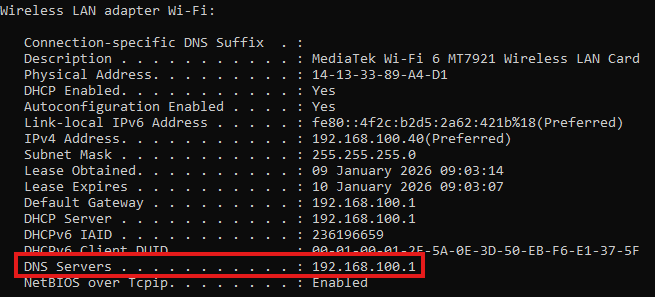
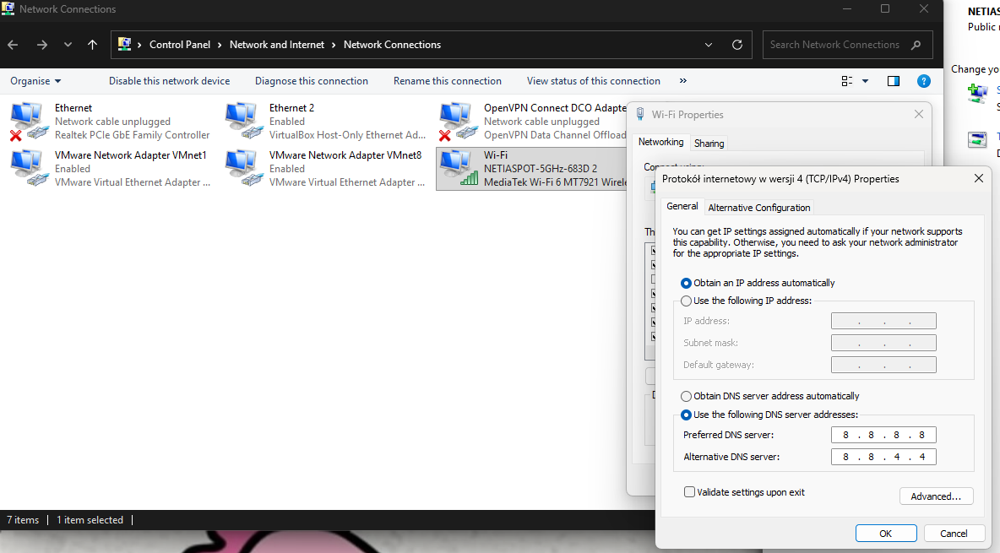
2.1.2. Using dig, host, nslookup find the following information:
2.1.2.1. Domain names and corresponding IP addresses of computers in lodz.pl domain
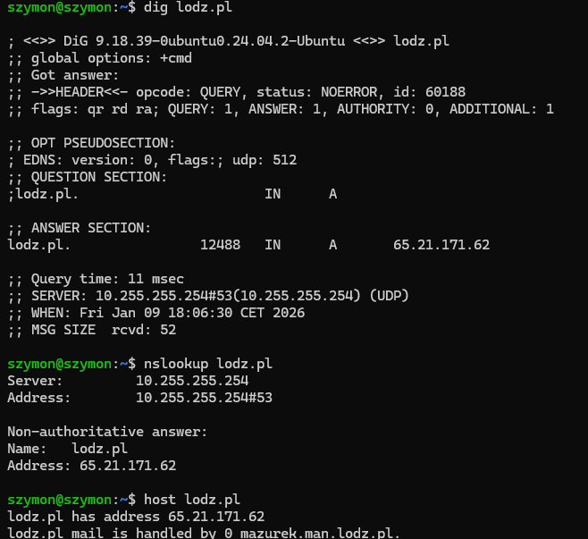
2.1.2.2. A computer somewhere in Europe, outside Lodz and find all the available information about DNS settings of this computer
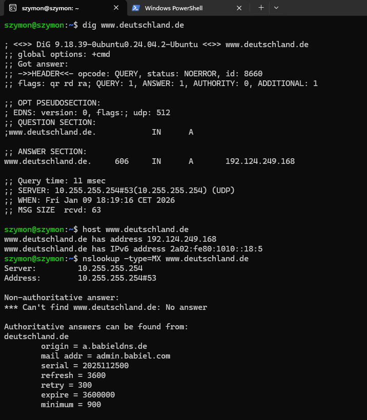
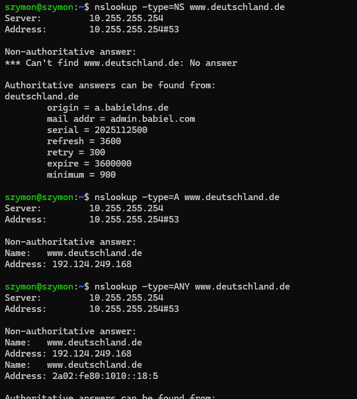
2.1.2.3. A computer somewhere outside Europe (eg. Exotic country) and find all the available information about DNS settings of this computer
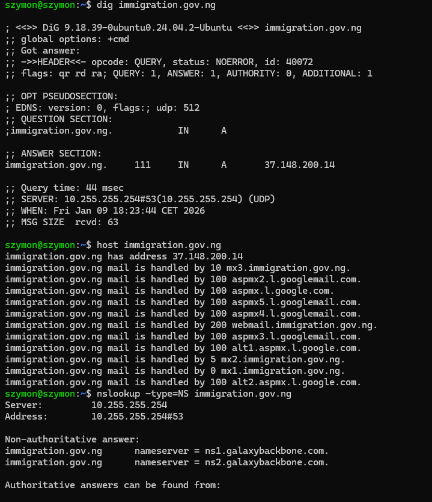
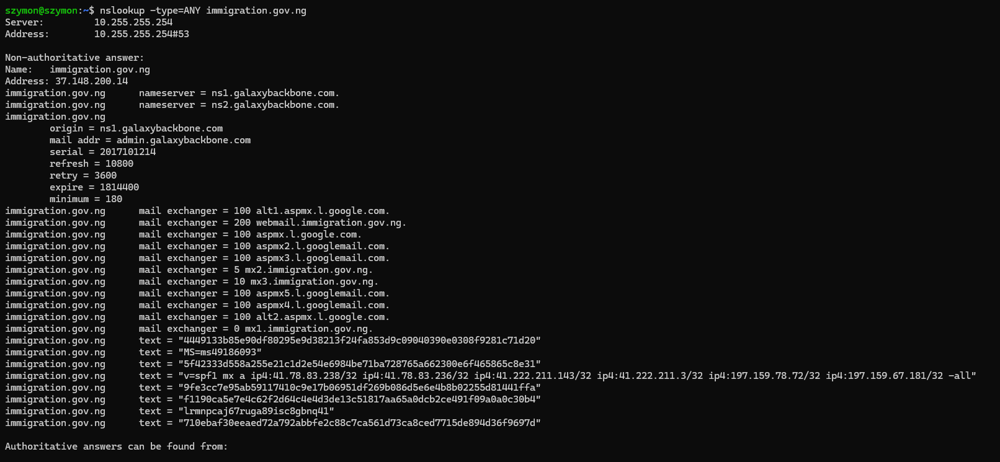
2.1.2.4. Verify DNS assignment for localhost
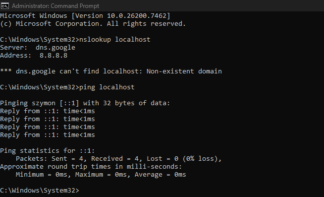
2.1.2.5. Flush dns memory on your computer using ipconfig
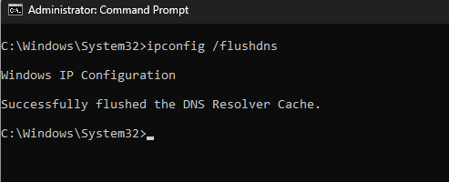
2.1.2.6. Change the file hosts in such a way that when you enter ifeXX.com the website msn.com will display (where XX is the number of your ife group).
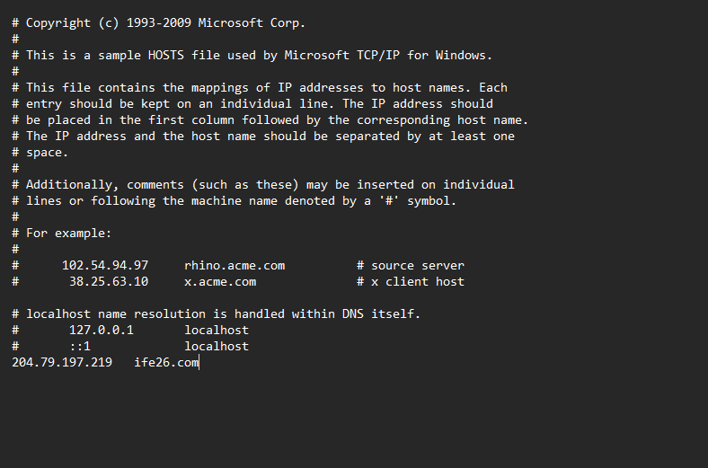
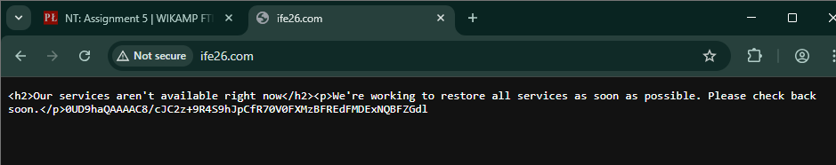
2.2. Mail system
2.2.1. Configure Thunderbird to send and receive e-mails from any e-mail server.
2.2.2. Send an e-mail to:
2.2.2.1. non-existent mail server
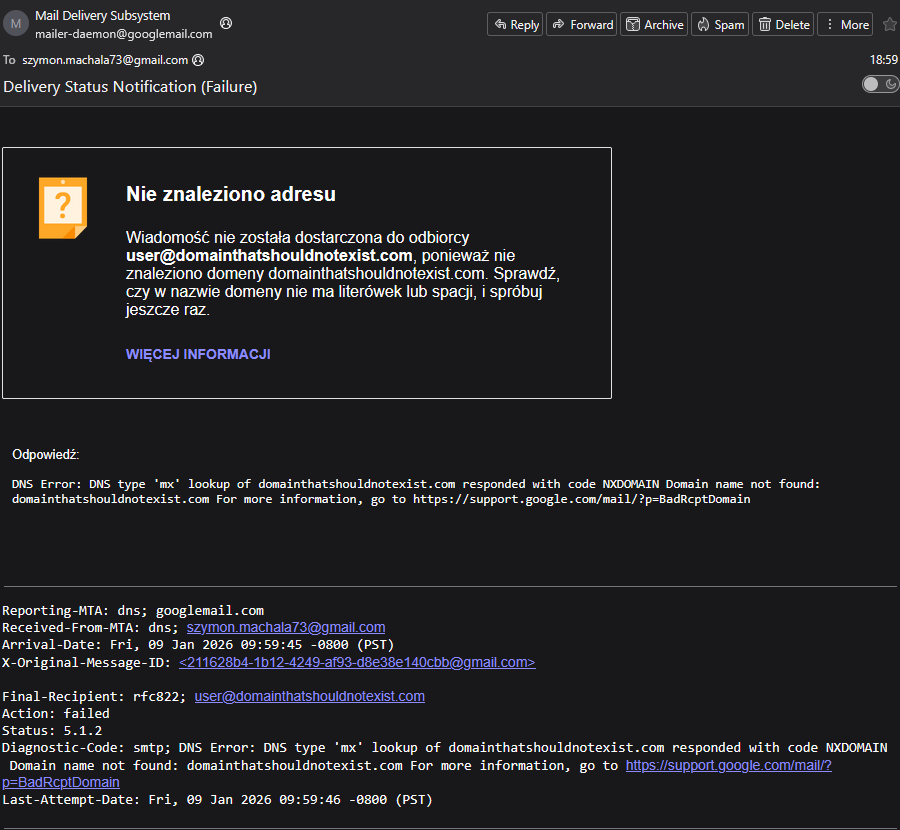
2.2.2.2. non-existent user on an existent e-mail server
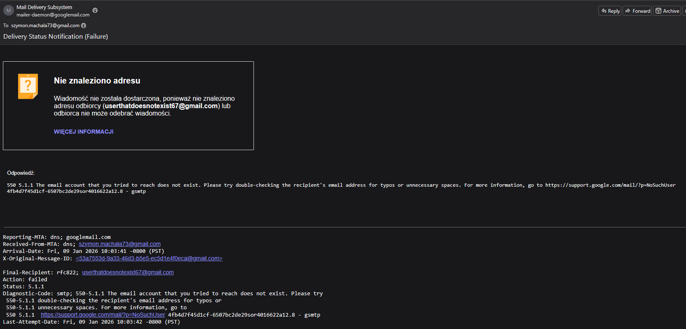
2.2.2.3. a server which is not an e-mail server you must receive and be understand the answer.
2.2.3. Using Wireshark analyse the process of sending and receiving e-mails from Thunderbird. Identify all protocols involved in the process of sending and receiving e-mails
Sending e-mail
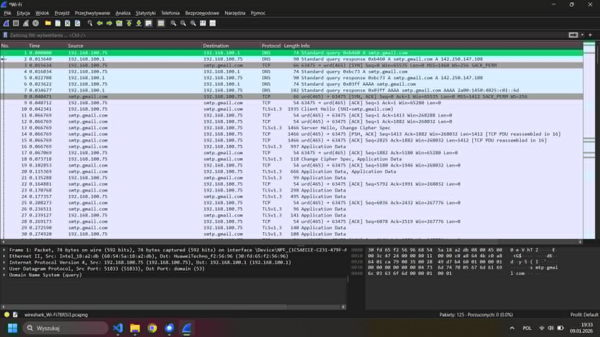
Reciving e-mail
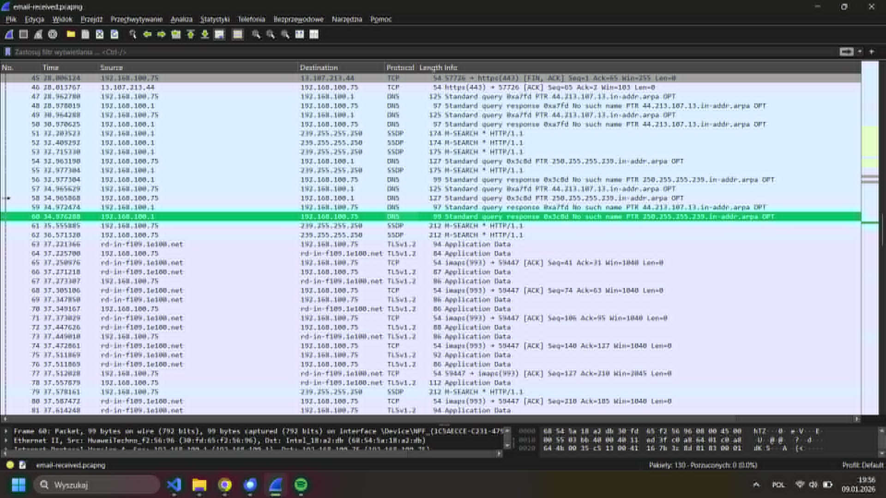
2.2.4. Send an e-mail connecting to a smtp server using telnet
Theoretical